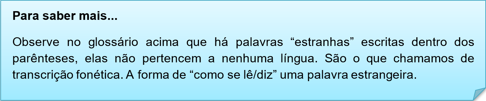

Capítulo 4: Textile and Clothes – Têxtil e Vestuário
Why know about textiles?
We get to know about the properties of fibers and fabrics such as the property of cotton and wool. After studying its property we got to know that cotton is suitable during summer and wool is suitable for winter.
We understand the origin of fabric or textile material, such as cotton is obtained from plant, wool is obtained from animal hair, silk is obtained from the silkworm
It will help us distinguish quality in fabrics and make better buying choices.
Nessa unidade vamos expandir nosso vocabulário do setor têxtil. Tipos de tecidos, classificação de roupas e estampas são alguns dos estudos que faremos. Analisaremos o texto introdutório da unidade, no qual tem informações sobre essa indústria.
Por que saber sobre têxteis?
Conhecemos as propriedades de fibras e tecidos, como as de algodão e lã. Depois de estudar sua propriedade, soubemos que o algodão é adequado durante o verão e a lã é adequada para o inverno.
Entendemos a origem do tecido ou do material têxtil, como o algodão é obtido das plantas, a lã é obtida dos pêlos dos animais, a seda é obtida do bicho-da-seda
Isso nos ajudará a distinguir a qualidade dos tecidos e a fazer melhores escolhas de compra.
Contextualizando – Tipos de roupas
Assista ao vídeo sobre o vocabulário têxtil. Pratique a pronuncia e aprenda mais palavras
Tipos de estampas de tecidos
Se você possui alguma familiaridade com os nomes de tecidos no seu idioma nativo, então, aprendê-los em inglês não será difícil, pois eles são frequentemente similares.
acrylic (akrílic) - acrílico
cashmere (káshmiir) - caxemira
corduroy (kórderoi) - veludo cotelê
cotton (kótn) - algodão
denim (dénim) - sarja de Nimes
feather (féder) - pluma
flannel (flánel) - franela
lace (léis) - cordão
leather (léder) - couro
linen (línen) - linho
nylon (náilon) - nylon
plastic (plástik) - plástico
polyester (poliéster) - poliéster
rayon (réion) - 'rayon'
silk (sílk) - seda
suede (suéid) - camurça
velvet (vélvet) - veludo
wool (wúul) – lã


Na nossa biblioteca há duas indicações de links para expandir seu conhecimento na área têxtil em inglês.
Para conhecer novas palavras e praticar a pronuncia acesse o site e pratique.
https://www.englishexperts.com.br/forum/lista-de-roupas-e-acessorios-em-ingles-com-traducao-t6428.html
Para conhecer expressões relacionadas as roupas, acesse o site e aprenda mais sobre vestimentas e pratique sua pronuncia.
https://www.englishexperts.com.br/forum/como-dizer-p-m-g-gg-tamanho-de-roupas-em-ingles-t27049.html
Reconstruindo conhecimento – Uso do gerúndio
Saber usar o gerúndio (-ing) ou infinitivo (to) nos verbos em inglês causa bastante confusão. Afinal, existem algumas regras – mas, para tantos outros casos, não. O tema merece atenção, pois usar os verbos corretamente pode fazer uma grande diferença na qualidade da sua comunicação.
Veja a seguir 6 dicas para nunca mais confundir o emprego das duas formas:
1. Quando os verbos são substantivos nas frases, eles ficam no gerúndio (-ing), diferentemente do português, que usamos no infinitivo.
>Working out is important for our health.
(Exercitar-se é importante para nossa saúde.)
>Leading people is a challenge.
(Liderar pessoas é um desafio.)
2. Se utilizarmos verbos após preposições, eles devem ficar no gerúndio (-ing)
>Is anyone interested in going to the movies tonight?
(Alguém está interessado em ir ao cinema hoje à noite?)
>I can’t get used to living in the countryside.
(Não consigo me acostumar a viver no interior.)
3. Alguns verbos sempre demandam gerúndio (-ing)
Seguem alguns dos mais comuns: enjoy (desfrutar, aproveitar, curtir); finish (terminar, acabar); avoid (evitar); give up (desistir); mind (importar-se, ligar); look forward to (esperar ansiosamente por); it’s worth (vale a pena); can’t stand (não pode suportar/ tolerar).
>I hope you enjoy staying here with us.
(Espero que você curta sua estadia aqui conosco.)
>She wants to give up smoking.
(Ela quer parar de fumar.)
4. Com alguns verbos é possível usar tanto gerúndio (-ing) quanto infinitivo (to), sem que haja alteração de significado
Alguns exemplos: begin / start (começar, iniciar) , intend (pretender), hate (odiar), like (gostar), love (amar, adorar), prefer (preferir), propose (propor).
>I love to eat / eating Japanese food.
(Adoro comer comida japonesa. )
>He started to work / working here in 2010.
(Ele começou a trabalhar aqui em 2010.)
5. Alguns verbos podem ser seguidos de gerúndio (-ing) ou infinitivo (to), só que há mudança de significado entre um e outro.
>Stop
Please, stop making that noise, it is driving me mad.
(Por favor, pare de fazer esse barulho, está me deixando louco.)
We stopped to have lunch.
(Nós paramos para almoçar. – parar o que se está fazendo para fazer outra coisa.)
>Remember
Did you remember to call the lawyer? (not forget)
(Você se lembrou de ligar para o advogado?)
>Try
I’m trying to open this box, but I’m just not strong enough. (try with difficulty or without success)
(Estou tentando abrir essa caixa, mas não sou forte o suficiente.)
>Regret
I regret informing you about the risk.
(Arrependo-me de ter te informado sobre o risco.)
6. Algumas estruturas pedem o verbo no infinitivo sem a partícula “to”.
Had better
I think you’d better see the doctor.
(Acho que seria melhor você ver um médico.)
Make
He made me cry.
(Ele me fez chorar.)
Verbos modais (can, could, should, must, might)
She can cook very well
(Ela pode cozinhar muito bem.)
Aplicando ao nosso vocabulário
I like to use cotton than acrylic . > Eu gosto de usar algodão a acrílico.
He starts working with textiles. > Ele começou a trabalhar com tecidos.
We enjoy making clothes for industries. > Nós gostamos de fazer roupas para indústrias
O que aprendi
• Nesta unidade aprendemos o vocabulário do setor têxtil;
• Aprendemos sobre materiais usados na produção de tecidos;
• Vimos os tipos de estampas;
• Aprendemos as nomenclaturas das peças de roupa;
• Na gramática, aplicamos a concordância verbal dos principais verbos de ação.
Praticando
Observe a imagem e liste as peças de roupas. Utilize nossos glossários e dicionários ilustrados da nossa unidade.
Podemos classificar as roupas por tipo de tecido e tipo de uso. As principais classificações são: Women’s clothing (Moda feminina), Men’s clothing (Moda masculina), Children’s clothing (Moda infantil), Baby clothing (Moda para recem nascidos), Sports clothing (Moda esportiva/Fitness), Winter clothing (Moda inverno), Summer clothing (Moda verão). Analisando essas classificações, diga quais tipos de roupas você prefere e cite exemplos das roupas que você usa.
I prefer (eu uso)
I wear (eu uso)
Observe o quadro resumo da concordância dos verbos em inglês. Elabora frases com os verbos LIKE(gostar) e HATE (odiar) usando nosso vocabulário têxtil.
Observe o exemplo.
I like wearing pants. > Eu gosto de usar calças.
__________________
__________________
__________________